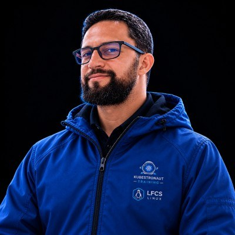
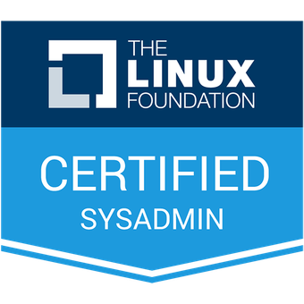

Tácio Souza
DevOps & Cloud Engineer · Fundador da Kurumin Tecnologia
Aracaju, SE · Brasil
Infraestrutura, Linux e DevOps/Cloud, certificado LFCS e focado em Kubernetes. CKA agendada para 20/11/2026, próximo passo rumo ao Kubestronaut da CNCF.
- Linux (LFCS)
- Kubernetes
- Docker
- Ansible
- Terraform
- GitHub Actions
- Observabilidade
Projetos
Sobre
Comecei em tecnologia em 2004, como técnico de suporte na Printer Master, em Arapiraca/AL, com manutenção de computadores, instalação e configuração do Windows e diagnóstico de hardware e software.
Desde 2009 trabalho na Embrapa, onde desenvolvi a rotina de procedimentos, controle de qualidade e documentação que aplico à organização, confiabilidade e operação de ambientes tecnológicos. Como fundador da Kurumin Tecnologia, desenvolvo soluções em Linux, automação, Kubernetes, backup, CI/CD e observabilidade.
Aberto a oportunidades CLT ou PJ em Infraestrutura Linux, DevOps, Cloud e plataformas Kubernetes.
Comunidade e software livre
Certificações

- LFCS · Linux Foundation Certified System Administrator · 2026 · conferir
- OCI · Oracle Cloud Infrastructure: Foundations, Architect e AI Foundations Associate · conferir Foundations · Architect · AI
- AWS re/Start · Escola da Nuvem · 181 h
- LFS162 · Introduction to DevOps and SRE · curso Linux Foundation · 2026
- CKA · Certified Kubernetes Administrator · prova em 20/11/2026
- KCNA · CKAD · KCSA · CKS → Kubestronaut · KCNA até dez/2026 · demais em 2027
- Golden Kubestronaut · meta 2028
Trajetória
- Fundador · Kurumin Tecnologia2026 – presente · Linux, automação, Kubernetes, CI/CD e observabilidade
- Pós-graduação em Cloud ComputingFaculdade do Leste Mineiro · 2024
- Técnico de TI · Wine Tecnologia2022 · Suporte de infraestrutura nível 2 (remoto)
- Coordenador · FLISOL Palmeira dos Índios/AL2016 · Festival Latino-americano de Instalação de Software Livre
- Pós-graduação em Redes de ComputadoresESAB · 2015
- Graduação em Gestão da Tecnologia da InformaçãoUNIP · 2012
- Embrapa Tabuleiros Costeiros2009 – presente · Procedimentos, controle de qualidade e documentação
- Técnico de Suporte · Printer Master2004 · Arapiraca/AL